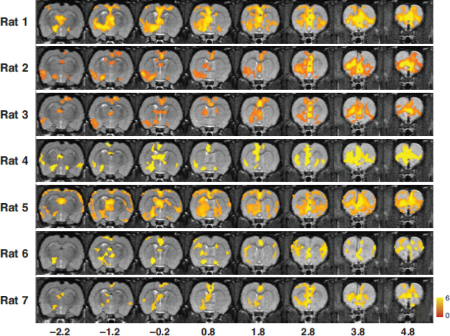
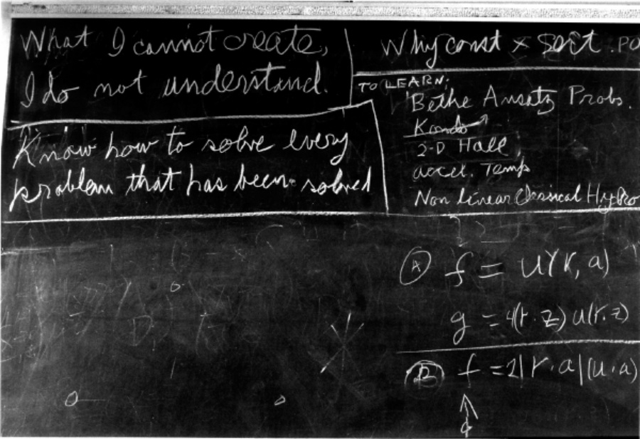

Chương 11 — Tóm Tắt Và Hướng Tương Lai
Chương 11 — Tóm Tắt Và Hướng Tương Lai
Cuốn sách này nhằm cung cấp một nền tảng và một khung nghiên cứu mà từ đó các giả thuyết có thể kiểm nghiệm được có thể được hình thành và điều tra bằng các công cụ thần kinh học hiện đại ở người và động vật. Nó dựa trên một vài tiền đề mạnh mẽ nhưng được chia sẻ rộng rãi, đưa ra những tuyên bố cụ thể dựa trên bằng chứng cho đến nay, và đề xuất các chiến lược cho tương lai. Nếu bạn không mang đi được điều gì khác từ cuốn sách này, thì đây là những điểm chính làm nền cho quan điểm của chúng tôi về cách hiểu và nghiên cứu các cảm xúc.
Những Điểm Chính Của Cuốn Sách Này
- Các cảm xúc về bản chất là những hiện tượng sinh học; do đó, chúng cần được hiểu theo các thuật ngữ sinh học. Đề xuất của chúng tôi là việc trả lời câu hỏi các cảm xúc là về điều gì đòi hỏi những mô tả về chức năng sinh học của chúng.
- Các cảm xúc hiện diện khắp nơi ở mọi loài và đã tiến hóa qua chọn lọc tự nhiên; do đó, chúng nên được nghiên cứu và so sánh giữa các loài động vật và con người. Charles Darwin đã nhấn mạnh điểm 1 và 2 từ trước.
- Chúng ta cần phân biệt rõ ba khía cạnh rộng của cảm xúc mà thường bị lẫn lộn: trạng thái cảm xúc, trải nghiệm có ý thức về cảm xúc, và tư duy về cảm xúc (dùng các khái niệm và từ ngữ). Cuốn sách này chủ yếu nói về khía cạnh thứ nhất trong số đó.
- Các cảm xúc có thể được nghiên cứu mà không cần nghiên cứu các cảm giác chủ quan. Một khoa học về cảm xúc do đó có thể tiến hành mà không cần đo các báo cáo bằng lời hay cần phải giải quyết các lý thuyết về ý thức.
- Các cảm xúc được thực hiện bởi các cơ chế thần kinh mà chúng ta có thể phát hiện và can thiệp bằng các phương pháp thần kinh học. Các nghiên cứu ở chuột đang cho thấy rằng ngay cả những vùng não tương đối nhỏ, như nhân trung tâm của hạch hạnh nhân, cũng không thực hiện một chức năng đơn nhất mà chứa nhiều kiểu tế bào nơ-ron có thể tạo ra các ảnh hưởng khác nhau (thậm chí theo các hướng ngược nhau) lên một trạng thái cảm xúc nhất định. Các công cụ mới như quang di truyền học và chụp ảnh canxi vì thế vô cùng quan trọng đối với một khoa học thần kinh học về cảm xúc.
- Các cảm xúc có những thuộc tính đặc trưng — các khối xây dựng (hay các "nguyên thủy cảm xúc") và các đặc tính — cung cấp các tiêu chí khách quan để nghiên cứu chúng (hình 3.2). Các thuộc tính cảm xúc cho phép chúng ta nhận diện các trường hợp cảm xúc ở nhiều loài và có thể cung cấp một không gian chiều mà trong đó chúng ta có thể so sánh và phân loại các cảm xúc khác nhau.
Có lẽ tiền đề đơn lẻ mạnh nhất trong cuốn sách của chúng tôi là điểm thứ nhất: rằng các cảm xúc về bản chất là những hiện tượng sinh học. Hiện nay chúng ta chỉ biết đến các cảm xúc, bất kể bạn quan niệm về chúng thế nào, trong các sinh vật sinh học. Những cơn bão, các proton, các ngôi sao, và những chiếc xe hơi không có cảm xúc. Điều này có nghĩa là chúng ta cần hiểu và điều tra các cảm xúc như những hiện tượng sinh học: chúng đã tiến hóa thế nào, chúng đảm nhận những chức năng thích nghi gì, và những cơ chế sinh học thần kinh nào đạt được điều đó?
Quan điểm rằng các cảm xúc phản ánh các thích nghi đã tiến hóa được chấp nhận rộng rãi trong cả giới sinh vật học lẫn tâm lý học, và được đề cập nổi bật trong cuốn sách của Charles Darwin, The Expression of the Emotions in Man and Animals (Biểu Hiện Cảm Xúc Ở Người Và Động Vật) (Darwin 1872/1965). Lập luận của Darwin rằng các biểu hiện cảm xúc được bảo tồn về mặt tiến hóa giữa các loài có quan hệ phát sinh chủng loại dựa trên hai quan sát nền tảng. Thứ nhất, các biểu hiện của những trạng thái cảm xúc cụ thể, như những trạng thái thúc đẩy hành vi phòng vệ (ví dụ, "sợ hãi" hay "lo âu"), thể hiện những đặc điểm tương tự ở các loài có quan hệ họ hàng. Thứ hai, bản chất của các biểu hiện này, tức là hình dạng cụ thể mà chúng mang, có thể được lý giải theo chức năng gốc — giá trị hữu ích — mà chúng mang lại cho loài đó trong môi trường của nó. Ví dụ, khi bị một động vật ăn thịt hay một con đồng loại hung hăng đe dọa, nhiều loài động vật nhăn răng. Điều này từng có chức năng gốc là trưng bày vũ khí mà con vật sẽ đem vào một xung đột thể chất, qua đó ngăn chặn
một xung đột như vậy. Tuy nhiên, không phải mọi biểu hiện cảm xúc đều có một giá trị hữu ích chức năng rõ ràng đối với bối cảnh mà chúng được thể hiện. Chẳng hạn, Darwin nêu ví dụ về hành vi dường như vô dụng của một con mèo nhào nặn một tấm chăn bằng hai chi trước, một hành vi vốn từng dùng để kích thích dòng sữa từ mẹ khi con vật còn bú. Bởi vì hành vi này gắn chặt với một trạng thái cảm xúc tiềm ẩn, Darwin lập luận, bất cứ kích thích nào khơi trạng thái cảm xúc đó cũng sẽ làm phát sinh hành vi nhào nặn — bất kể nó có hữu ích hay không. Những trường hợp này và các trường hợp khác được mô tả trong chương đầu tiên của ông về "Nguyên Lý Các Thói Quen Liên Hợp Có Ích". Loại hiện tượng này không cho phép chúng ta suy ra trạng thái cảm xúc nào đang được khơi lên, nhưng nó là bằng chứng hành vi vững chắc cho sự tồn tại của một trạng thái cảm xúc liên hợp nào đó.
Quan điểm tiến hóa của chúng tôi về các chức năng mà các cảm xúc đảm nhận lại tự nhiên dẫn chúng tôi đến việc đưa động vật vào một khoa học về cảm xúc, cũng giống như điều đó đã làm với Darwin. Ngay cả khi các cảm xúc của con người không có một tổ tiên tiến hóa rõ ràng, việc nghiên cứu các dạng đa dạng của cảm xúc ở các loài khác vẫn sẽ bổ ích, vì điều đó cho chúng ta một cái nhìn rộng về cách các hệ thần kinh đã giải quyết những vấn đề sinh thái cơ bản. Cũng có những lý do thực tiễn vững chắc cho việc tiếp cận so sánh trong nghiên cứu cảm xúc. Có những thí nghiệm bất khả thi hoặc không thể thực hiện ở người, và những kỹ thuật với mức độ can thiệp nhân quả hay độ phân giải giải phẫu thiết yếu mà chỉ có thể áp dụng ở động vật. Một khoa học về cảm xúc sẽ bị tàn phá nặng nề, và mang thiên kiến nặng nề, nếu tự giới hạn mình ở con người. Hãy so sánh với kiến thức của chúng ta về thị giác hay về trí nhớ: những lĩnh vực này đã hưởng lợi khổng lồ từ một cách tiếp cận đa phương pháp, đa loài. Chúng ta có thể liên hệ các nghiên cứu thị giác dùng chụp cộng hưởng từ chức năng (fMRI) ở người với các mạch thần kinh và các ghi đơn vị đơn ở khỉ, loài gặm nhấm và ruồi. Chúng ta cần cùng một cách tiếp cận phong phú như thế cho một khoa học về cảm xúc.
Các trạng thái cảm xúc phân biệt với các trải nghiệm về cảm xúc, các khái niệm về cảm xúc, và các từ ngữ cho cảm xúc. Việc nhấn mạnh vào các trải nghiệm hay các khái niệm về cảm xúc trong thần kinh học nhận thức phản ánh thiên kiến lấy con người làm trung tâm của nhiều nghiên cứu cảm xúc. Nhưng những thứ này không phải là những nghiên cứu trực tiếp về bản thân cảm xúc, và chúng không cần thiết cho việc nghiên cứu cảm xúc. Chúng ta có thể nghiên cứu các trạng thái cảm xúc mà không cần nghiên cứu các khái niệm cảm xúc hay các từ ngữ cảm xúc. Thật vậy, các báo cáo bằng lời về những trải nghiệm có ý thức, những gì mọi người nói rằng họ nghĩ và tin về các cảm xúc, và những từ mà người thường dùng để
nói về các cảm xúc, tự thân chúng là những đối tượng nghiên cứu. Chúng có thể cho chúng ta biết về tính biến đổi theo văn hóa, về sự phát triển của các khái niệm cảm xúc, và về sự khác biệt giữa các ngôn ngữ. Nhưng chúng không nên bị lẫn lộn với việc nghiên cứu các trạng thái cảm xúc, vốn cần được khám phá bằng các phương pháp sinh học áp dụng cho cả động vật lẫn con người.
Quan trọng là, chúng tôi không ủng hộ rằng việc nghiên cứu các cảm xúc ở động vật nên bị giới hạn vào, hay thậm chí tập trung vào, việc xác định xem một loài cho trước có một trạng thái nội tại tương đương với một cảm xúc cụ thể nào đó của con người hay không (ví dụ, "sợ hãi"). Thay vào đó, nó nên nhắm đến việc áp dụng các tiêu chí khách quan để xác định xem một tập hợp biểu hiện kiểu hình cụ thể, được đo ở một con vật trong một tập hợp điều kiện cho trước, có thể hiện những thuộc tính lõi của một trạng thái cảm xúc hay không (ví dụ, những thuộc tính mà chúng tôi đã liệt kê trong hình 3.2). Nếu có, thì câu hỏi thú vị tiếp theo là trạng thái đó có đồng nguồn hay tương tự với những trạng thái giống nhau mà chúng ta có thể tìm thấy ở người bằng các biến phụ thuộc tương tự hay không. Nếu trạng thái đó được khơi lên bởi việc tiếp xúc với một động vật ăn thịt và liên quan các hành vi như trốn tránh, thoát thân, và phòng vệ, thì đó là một vấn đề ngữ nghĩa liệu chúng ta gọi nó là "sợ hãi" hay là một "trạng thái cảm xúc phòng vệ". Điều quan trọng là hiểu các cơ chế não điều khiển những thuộc tính khác nhau của trạng thái này — như tính tích cực–tiêu cực, tính mở rộng được, tính bền vững và tính khái quát hóa của nó.
Nhắc Lại Về Các Cảm Giác
Mặc dù chúng tôi bỏ qua các cảm giác (những trải nghiệm có ý thức về cảm xúc) trong phần lớn cuốn sách (nhưng xem chương 10), và mặc dù chúng tôi lập luận rằng khía cạnh này của cảm xúc không thiết yếu cho việc nghiên cứu các trạng thái cảm xúc một cách khoa học, chúng tôi vẫn tin rằng động vật có các cảm giác. Đây cũng là niềm tin của nhiều người thường và nhiều nhà khoa học khác, và không thiếu các sách về cảm giác của động vật. Marc Bekoff đã viết một cuốn sách với tựa đề The Emotional Lives of Animals (Cuộc Sống Cảm Xúc Của Động Vật) hoàn toàn nói về các cảm giác của động vật (Bekoff 2007). Cuốn sách của Carl Safina, Beyond Words: What Animals Think and Feel (Vượt Ra Ngoài Lời: Động Vật Nghĩ Gì Và Cảm Nhận Gì), tương tự cung cấp vô số giai thoại thuyết phục nhiều người gán các cảm giác cho động vật (Safina 2016). Thậm chí còn có một tạp chí mới đăng nhiều bài viết về cảm giác của động vật, có tên Animal Sentience (http://animalstudiesrepository.org/animsent/).
Đáng tiếc là vẫn chưa có sự đồng thuận về việc bằng chứng hành vi có đủ để kết luận rằng động vật có những trải nghiệm có ý thức về cảm xúc hay không. Cho đến khi có bằng chứng như vậy, một khoa học về cảm xúc ở động vật mà bao gồm các trải nghiệm có ý thức về cảm xúc vẫn còn gặp khó khăn, vì sẽ có những bất đồng quyết liệt về vấn đề này. Ngay cả khi đã có bằng chứng đó, một khoa học về cảm xúc ở người và động vật vẫn có thể hiệu quả mà không cần phải giải quyết những vấn đề khó khăn về trải nghiệm có ý thức. Chính vì những lý do này, như chúng tôi đã bàn khắp cuốn sách, mà chúng tôi tin rằng một khoa học về cảm xúc hiện nên tách việc nghiên cứu trải nghiệm có ý thức về cảm xúc khỏi việc nghiên cứu trạng thái cảm xúc. Một lần nữa, chúng ta có thể nhìn sang những ví dụ khoa học thành công khác đã làm điều tương tự: chẳng hạn, khoa học thị giác không đòi hỏi nhà khoa học phải nghiên cứu các qualia (những chất liệu cảm tính, ví dụ, trải nghiệm chủ quan khi nhìn thấy màu đỏ thay vì màu xanh dương) — đó là một vấn đề khác, và khó khăn hơn nhiều, so với việc hiểu thị giác. Chúng ta nên làm điều tương tự với một khoa học về cảm xúc: tách cảm xúc khỏi trải nghiệm có ý thức về cảm xúc. Khi điểm khởi đầu này đã được chọn, việc đưa động vật vào một khoa học về cảm xúc là hoàn toàn không có vấn đề gì (và nói vậy cũng là nói đến những con người mà chúng ta cũng thiếu các báo cáo bằng lời, như trẻ sơ sinh, các bệnh nhân sa sút trí tuệ, hay các bệnh nhân mất ngôn ngữ).
Đáng lưu ý là lập luận chuẩn mà người ta thường nghe để ủng hộ ý tưởng rằng con người chứ không phải động vật có những trải nghiệm cảm xúc có ý thức chứa đựng sự mâu thuẫn. Câu hỏi là thế này: nếu bạn nghi ngờ rằng động vật có thể cảm nhận cảm xúc một cách có ý thức, thì tại sao bạn không cũng nghi ngờ rằng người khác có thể cảm nhận cảm xúc một cách có ý thức? Lập luận chuẩn mà người ta thường nghe là người khác giống chính mình, và do đó người ta có thể suy luận hợp lệ bằng cách loại suy, trong khi động vật khác biệt quá nhiều. Nhưng hãy nghĩ đến trường hợp một đứa trẻ chưa biết nói hay một người nói một ngôn ngữ mà bạn không hiểu. Bạn có thể biết khá nhiều về họ cảm thấy thế nào từ hoàn cảnh của họ, tư thế cơ thể của họ, hành vi của họ, thậm chí mà không cần báo cáo bằng lời. Vậy đó, đó chính là cùng loại bằng chứng mà bạn có đối với con vật. Quan trọng là, đây không phải là cùng loại bằng chứng mà bạn dùng để đánh giá chính mình cảm thấy thế nào; bạn quyết định mình cảm thấy thế nào dựa trên sự chiêm nghiệm nội tâm, chứ không phải bằng cách soi gương. Vì vậy, lập luận loại suy không đứng vững.
Đối với chính bản thân mình, bạn biết bạn cảm thấy sợ hãi mà không cần quan sát hành vi của chính mình. Đối với người khác, bạn chỉ có thể biết họ cảm thấy thế nào bằng cách quan sát hành vi của họ (hoặc lắng nghe những gì họ báo cáo rằng họ
cảm thấy). Đó là những loại dữ liệu rất khác nhau, vậy điều gì khiến bạn nghĩ rằng người kia đang cảm thấy những gì bạn đang cảm thấy (hay quả thật, rằng những hành vi bạn thấy ở người khác có liên quan gì đến cảm giác hay không)? Chúng tôi không muốn đi lạc đề ở đây, nhưng chúng tôi nêu điểm này để gợi ý rằng không chỉ việc nghiên cứu các trạng thái cảm xúc ở động vật là hoàn toàn hợp lệ, mà thậm chí có thể trong tương lai sẽ khả thi khi nghiên cứu các trải nghiệm có ý thức về những trạng thái đó ở động vật. Không có sự biện minh chính đáng nào cho niềm tin bất đối xứng rằng các trải nghiệm có ý thức về cảm xúc xảy ra ở người khác, nhưng không ở động vật. Nói cách khác, việc tuyên bố rằng người ta chỉ có thể nghiên cứu "trải nghiệm chủ quan" của các cảm xúc ở con người, và rồi làm điều đó bằng cách nghiên cứu các chủ thể khác ngoài chính mình, chẳng khác gì việc tuyên bố người ta có thể nghiên cứu trải nghiệm chủ quan về cảm xúc ở động vật.
Những Thí Nghiệm Tương Lai
Một lý do chủ yếu khiến chúng tôi đã dành không ít trang để mô tả các khái niệm và chủ đề bao trùm trong cuốn sách này rất đơn giản: khoa học về cảm xúc vẫn còn ở giai đoạn sơ khai. Bất cứ dữ liệu nào chúng tôi mô tả lúc này đều có khả năng cần được sửa đổi chút ít vào lúc cuốn sách được xuất bản, và có thể là còn quá sớm nếu cố dùng chúng để chống đỡ những kết luận vững chắc. Chúng tôi hy vọng đã truyền đạt được phần nào cảm giác về việc chúng ta vẫn còn bao nhiêu điều phải học về các mạch thần kinh thực hiện các trạng thái cảm xúc. Mặt khác, các kỹ thuật và logic phân tích của các nghiên cứu thần kinh học hiện đại về cảm xúc cung cấp một số công cụ vô cùng mạnh mẽ mà chúng ta có thể dùng để suy nghĩ về những gì mình có thể làm tiếp theo.
Vì vậy, chúng tôi kết thúc cuốn sách này bằng một danh sách ngắn các câu hỏi mở. Với trong tay những khái niệm tinh tế hơn, một thuật ngữ rõ ràng hơn, một cuộc khảo sát các phương pháp hiện đại sẵn có cho các nhà thần kinh học, và một cảm nhận về các mạch và hệ thống não đã được làm rõ trong các nghiên cứu cho đến nay, chúng ta có thể cố gắng hình thành những thí nghiệm có thể trả lời một số câu hỏi khởi đầu đó. Một lý do khác khiến chúng tôi kết thúc bằng một số thí nghiệm tương lai là chúng đưa ra những khuyến nghị cụ thể nhất về những gì vẫn còn thiếu. Trong các thí nghiệm chúng tôi hình dung dưới đây, chúng tôi chỉ ra một số chỗ trống cụ thể — những kỹ thuật và cách tiếp cận cần thiết để thực hiện thí nghiệm, nhưng chưa hẳn đã sẵn có.
Chúng tôi bắt đầu bằng việc phác thảo một số thí nghiệm gần như có thể thực hiện được, rồi chuyển sang những "thí nghiệm" mang tính thách thức hơn mà thực ra chỉ là những câu hỏi mở cho tương lai, những thách thức mà một khoa học về cảm xúc có thể cuối cùng sẽ phải đối mặt.
Câu Hỏi Mở 1. Hoạt Động Ở Các Cấu Trúc Dưới Vỏ Não Như Hạch Hạnh Nhân Có Tạo Ra Các Trạng Thái Cảm Xúc Hay Không?
Giả thuyết. Kích thích bằng điện hay quang di truyền các cấu trúc dưới vỏ não trong một não động vật hay não người còn nguyên vẹn là đủ để tái tạo nhiều hoặc tất cả các hiệu ứng có thể đo được của một cảm xúc.
Việc tìm được bằng chứng ủng hộ hay chống lại giả thuyết mạnh này sẽ góp phần lớn vào việc giải quyết một số tranh luận hiện tại trong thần kinh học của cảm xúc. Dù có vẻ đáng ngạc nhiên, vẫn còn tranh luận dai dẳng về việc hoạt động ở các cấu trúc dưới vỏ não có gây ra các cảm xúc hay không. Một mặt, như chúng tôi đã tổng quan trong chương 6, việc kích thích chọn lọc các nơ-ron cụ thể trong các cấu trúc dưới vỏ não như hạch hạnh nhân và vùng dưới đồi trung-thất là đủ để hiện thực hóa nhiều thuộc tính của một trạng thái cảm xúc phòng vệ, ở loài gặm nhấm. Nhưng bằng chứng ở con người thì mờ nhạt hơn nhiều. Việc kích thích các vùng dưới vỏ não trong não người đã thực sự được báo cáo là khơi các báo cáo bằng lời về trải nghiệm có ý thức sợ hãi hay lo âu ở con người, ví dụ. Tuy vậy, những kết quả đó phần lớn mang tính giai thoại và đã được một số người diễn giải lại là phản ánh sự hưng phấn không đặc hiệu, chứ không phải một "cảm xúc" thực sự (LeDoux 2015), do khó khăn trong việc giới hạn kích thích điện vào đúng một vùng não với các kỹ thuật được dùng thời đó.
Vậy, làm thế nào chúng ta có thể giải quyết thế bế tắc này? Thí nghiệm lý tưởng sẽ là kích thích một cách chính xác những quần thể nơ-ron trong các cấu trúc dưới vỏ não mà chúng tôi giả thuyết là đủ để khơi một trạng thái cảm xúc, ở cả người lẫn động vật. Điều quan trọng là phải làm điều này bằng công nghệ không kích thích các quần thể nơ-ron lân cận khác, hay các bó sợi đi ngang qua (các axon chạy ở gần đó). Mức độ chính xác đó có thể đạt được bằng quang di truyền học ở các động vật không phải người. Tuy nhiên, thí nghiệm này chưa thể thực hiện ở con người, vì cả lý do đạo đức lẫn kỹ thuật (hộp 5.5). Hiện tại, điều tốt nhất người ta có thể làm ở người là dùng kích thích vi mô não có tiêu điểm.
Các hiệu ứng của những thử kích thích này, ở cả người lẫn động vật, không nên được đánh giá bằng một loại biến phụ thuộc duy nhất, mà nên được đánh giá bằng một loạt các biến phụ thuộc bao gồm các tham số có thể quan sát được ở cả người lẫn động vật, như các quan sát hành vi, các đo lường sinh lý và nội tiết cũng như báo cáo bằng lời (ở các đối tượng người), và quan trọng là, các đo lường toàn não như fMRI (ở cả người lẫn động vật). Chúng ta sẽ muốn xem xét sự kích hoạt của các cấu trúc não đồng nguồn giữa các loài, nên trong thí nghiệm này chúng tôi sẽ giới hạn mình ở các động vật có vú. Một cách để thiết kế một nghiên cứu như vậy là đặt một chuỗi câu hỏi tiến triển như sau:
- Kích thích điện hạch hạnh nhân (hay bất cứ vùng não dưới vỏ nào khác mà ta quan tâm) ở người có đủ để gây ra các trải nghiệm có ý thức về cảm xúc, được đo bằng báo cáo bằng lời, hay không?
- Nếu có, thì mô hình kích hoạt não toàn cục đi kèm, đo bằng fMRI, là gì?
- Chúng ta có thấy một mô hình kích hoạt não tương tự đo bằng fMRI ở một con khỉ hay một con chuột trong khi kích thích quang di truyền một quần thể nơ-ron cụ thể trong hạch hạnh nhân hay không? Con người có quần thể nơ-ron tương tự đó trong hạch hạnh nhân của họ hay không?
- Trong những trường hợp này, chúng ta có thấy các hiệu ứng hành vi và sinh lý khác của một trạng thái cảm xúc trung ương được khơi lên hay không?
- Kích thích này có tạo ra một trạng thái thể hiện các thuộc tính cơ bản của một cảm xúc, bao gồm tính bền vững, tính mở rộng được, tính tích cực–tiêu cực, và tính khái quát hóa, hay không?
Bằng cách đó, chúng ta sẽ cố gắng thu được càng nhiều bằng chứng cho việc tái tạo một trạng thái cảm xúc trung ương càng tốt, thông qua nhiều biến phụ thuộc, và thông qua quan sát các thuộc tính của cảm xúc mà chúng tôi đã liệt kê trong hình 3.2. Câu hỏi là liệu có những mô hình hoạt động não toàn cục tương tự được khơi lên bằng kích thích cụ thể một cấu trúc dưới vỏ não hay một quần thể tế bào ở người và động vật hay không, và nếu có, liệu những mô hình đó có tương quan với các biến phụ thuộc chung của một trạng thái cảm xúc có thể được đánh giá ở cả hai loài hay không.
Giới hạn. Có ít nhất ba giới hạn đối với thí nghiệm này. Trước hết và trên hết, có những thách thức phương pháp luận rõ ràng — những thách thức chỉ đường cho các kỹ thuật mới mà chúng ta sẽ cần phải phát triển. Chúng ta sẽ cần có khả năng kích thích chính xác hơn đáng kể ở người so với hiện nay, lý tưởng là tương đương với kích thích quang di truyền. Điều này không phải bất khả thi về nguyên tắc, nhưng thí nghiệm sẽ luôn bị giới hạn ở những bệnh nhân người hiếm hoi mà ở đó có lý do lâm sàng cho việc cấy ghép xâm lấn các sợi quang hay điện cực, cũng như việc biến đổi gen các nơ-ron bằng các vector virus (hộp 5.5).
Một giới hạn thứ hai, cũng chủ yếu thuộc phương pháp luận, là chúng ta sẽ cần đưa ra một danh sách chín chắn hơn và đầy đủ hơn về những gì cần tìm kiếm làm bằng chứng của một trạng thái cảm xúc. Điều gì được tính là tái tạo "tất cả các hiệu ứng của cảm xúc"? Một cách để giải quyết mối bận tâm này có thể là so sánh cảm xúc được khơi bằng thí nghiệm với cảm xúc được khơi một cách tự nhiên. Nếu ta đặt một con chuột đối mặt với một động vật ăn thịt và lượng hóa càng nhiều biến phụ thuộc càng tốt, ta có thể lập một danh sách rồi hỏi: trong tất cả các hiệu ứng của cảm xúc mà ta thấy trong hoàn cảnh tự nhiên, những hiệu ứng nào được tái tạo bằng kích thích điện?
Giới hạn thứ hai này lập tức chỉ chúng ta đến một giới hạn thứ ba, đó là thực tế rằng kích thích điện (hay quang di truyền) là nhân tạo. Rõ ràng trong thí nghiệm vừa mô tả, chúng ta không bắt chước những gì sẽ xảy ra trong não dưới các hoàn cảnh tự nhiên. Một bước hướng tới việc giải quyết mối bận tâm này sẽ là kích thích quang di truyền các nơ-ron hạch hạnh nhân theo chính xác cùng mô hình mà chúng thường thể hiện sự kích hoạt trong một trạng thái cảm xúc được khơi tự nhiên, về bản chất là phát lại mô hình hoạt động mà chúng ta có thể đã ghi nhận trong đoạn văn ở trên với một động vật ăn thịt thật. Điều này thực tế đã được thực hiện, trong các nghiên cứu về trí nhớ ở chuột, nên về nguyên tắc là khả thi. Tuy nhiên, ngay cả một lần phát lại chính xác đến thế vẫn là một trạng thái não nhân tạo. Chúng ta có thể đưa các cấu trúc dưới vỏ não khác vào tập hợp các nơ-ron để kích hoạt bằng kích thích có mô hình chính xác. Nhưng dù chúng ta tái tạo mô hình không thời gian của sự kích hoạt nơ-ron trong một tập hợp hữu hạn các cấu trúc dưới vỏ não chính xác đến đâu, thực tế vẫn là con vật không thực sự ngửi hay nhìn thấy một động vật ăn thịt. Dù vậy, có những trường hợp giai thoại mà kích thích một vùng não cụ thể nào đó ở người có thể khơi một cảm giác hay một tri giác sống động như thể nó được kích phát bởi một đối tượng bên ngoài thực sự, nên về nguyên tắc điều này cũng có thể xảy ra ở một con vật.
Bằng cách kích thích các cấu trúc dưới vỏ não, chúng ta có thể hỏi về tập hợp con đủ tối thiểu của một trạng thái cảm xúc — nhưng chúng ta sẽ cần ghi nhớ rằng chúng ta đang bỏ sót một số thành tố.
Câu Hỏi Mở 2. Các Cấu Trúc Dưới Vỏ Não Có Gây Ra Các Trạng Thái Cảm Xúc Toàn Cục Bằng Cách Bổ Sung Các Cấu Trúc Cần Thiết Khác Hay Không?
Giả thuyết. Việc gây ra một trạng thái cảm xúc thông qua kích thích dưới vỏ não cũng đòi hỏi các cấu trúc não khác, bao gồm cả các cấu trúc vỏ não ở một số loài.
Câu hỏi được đặt ra trong thí nghiệm này nối tiếp một cách logic với Câu Hỏi Mở 1. Chúng tôi giả định rằng một trạng thái cảm xúc đòi hỏi sự xử lý trong một hệ phân tán gồm nhiều vùng não tương tác với nhau. Như vậy, kích thích chỉ một nút dưới vỏ não, như hạch hạnh nhân hay vùng dưới đồi (hoặc cả hai), có thể đủ để gây ra một trạng thái cảm xúc, nhưng chúng tôi sẽ giả thuyết rằng nó làm điều đó phần lớn bằng cách lôi kéo nhiều vùng não khác. Trong số các vùng não khác này, vùng nào cũng cần thiết cho trạng thái cảm xúc?
Để trả lời câu hỏi này, chúng ta sẽ thêm một thành tố nữa vào thí nghiệm mà chúng tôi đã phác thảo trong Câu Hỏi Mở 1 như mô tả ở trên: chúng ta sẽ cắt bỏ (thực nghiệm) một cách hệ thống những vùng não đã được kích hoạt ở xa trong Câu Hỏi Mở 1, và xác định xem những tổn thương đó có chặn không chỉ trạng thái cảm xúc được tạo ra bằng kích thích não nhân tạo, mà cả những trạng thái được khơi bởi các kích thích ngoại thụ cảm mang tính tự nhiên hay không. Chẳng hạn, kích thích hạch hạnh nhân ở người gây ra sự kích hoạt fMRI mạnh ở vỏ não trước trán trung-thất (Oya và cộng sự 2017). Đây là điều người ta có thể mong đợi dựa trên sự kết nối giữa hai cấu trúc này. Điều này cũng được xác nhận bởi các nghiên cứu ở người đã kết hợp fMRI với các tổn thương. Ví dụ, một nghiên cứu fMRI cho thấy một nhiệm vụ mà thông thường kích hoạt hạch hạnh nhân thì không kích hoạt được hạch hạnh nhân ở những bệnh nhân có tổn thương ở vỏ não trước trán trung-thất (Motzkin và cộng sự 2015). Một nghiên cứu fMRI thứ hai cho thấy một nhiệm vụ mà thông thường kích hoạt vỏ não trước trán giữa thì không kích hoạt được vỏ não trước trán giữa ở những bệnh nhân có tổn thương hạch hạnh nhân (Hampton và cộng sự 2007). Hai nghiên cứu mà chúng tôi vừa trích dẫn cho thấy hạch hạnh nhân và vỏ não trước trán giữa được ghép nối về mặt chức năng, và rằng
sự kích hoạt ở cấu trúc này ảnh hưởng đến sự kích hoạt ở cấu trúc kia, một phát hiện cũng được xác nhận bởi các ghi đơn vị đơn đồng thời từ hai cấu trúc này ở khỉ (Morrison và cộng sự 2011).

Hình 11.1: Giả thuyết về cách hạch hạnh nhân tạo ra các thành tố của sự sợ hãi. Xem phần văn bản để biết chi tiết. vmPFC: vỏ não trước trán trung-thất. PAG: chất xám quanh ống dẫn nước.
Quay trở lại thí nghiệm tương lai của chúng ta, nếu bây giờ chúng ta kích thích quang di truyền hay kích thích điện hạch hạnh nhân ở một con gặm nhấm hay một bệnh nhân người, và chúng ta thấy điều này gây ra phần lớn hay tất cả các thành tố của một trạng thái cảm xúc, thì điều gì sẽ xảy ra nếu chúng ta thêm vào đó cắt bỏ vỏ não trước trán trung-thất? Liệu chúng ta có mất một phần hay tất cả các thành tố của trạng thái cảm xúc không? Loại thí nghiệm "epistasis" như vậy (trong đó người ta hỏi liệu sự ức chế một cấu trúc "hạ nguồn" có chặn hiệu ứng của việc kích hoạt một cấu trúc "thượng nguồn" hơn hay không) sẽ đặc biệt bổ ích trong việc cho chúng ta thấy phần đóng góp cần thiết của nhiều cấu trúc não. Có lẽ vỏ não trước trán trung-thất đặc biệt quan trọng cho trải nghiệm có ý thức về một cảm xúc ở con người, nên khi vùng này bị tổn thương, đây chính là thành tố cảm xúc sẽ bị rơi bỏ. Điều này sẽ gợi ý một đồ thị nhân quả cụ thể, như thể hiện trong hình 11.1.
Theo sơ đồ này, sự kích hoạt hạch hạnh nhân (hay của một số kiểu tế bào cụ thể trong cấu trúc này) là đủ để tạo ra tất cả các thành tố của sự sợ hãi trong một não khỏe mạnh. Nhưng để có được tất cả những thành tố đó, như
trải nghiệm có ý thức về sự sợ hãi, nó cần phải tác động thông qua các cấu trúc não khác. Nếu những cấu trúc đó bị tổn thương, chúng ta có thể loại bỏ thành tố đó.
Giới hạn. Như trước, có những giới hạn rõ ràng ở đây. Một lần nữa, có những thách thức kỹ thuật. Nếu chúng ta làm việc với chuột, chúng tôi giả định rằng chúng ta đã nắm được độ chính xác của kích thích và ức chế quang di truyền. Nhưng còn độ chính xác của việc cắt bỏ các phần của vỏ não trước trán thì sao? Ví dụ, nếu chúng ta dùng fMRI làm phương pháp trực quan hóa các hiệu ứng nhân quả của kích thích hạch hạnh nhân, thì chúng ta chỉ biết rằng một vùng tương đối rộng ở vỏ não trước trán giữa được kích hoạt. Nhưng như đã bàn trong chương 6, có những tập hợp con dị dạng của các nơ-ron trong vỏ não trước trán giữa, và có lẽ một số trong đó thể hiện các phản ứng được khơi bởi kích thích hạch hạnh nhân với độ trễ ngắn, trong khi những nơ-ron khác đòi hỏi độ trễ dài hơn — và một số có thể không được kích hoạt bởi hạch hạnh nhân chút nào. Nghĩa là, có một mạch thần kinh phức tạp ngay bên trong vỏ não trước trán giữa, khiến việc biết cần cắt bỏ gì trở nên phức tạp: chính xác hơn, chúng ta đặt gì vào ô "vmPFC" trong hình 11.1? Vì vậy, sẽ cần thêm thông tin về các kiểu tế bào và mạch thần kinh trong vmPFC để làm cho một thí nghiệm như vậy trở nên có ý nghĩa.
Một giới hạn thứ hai liên quan đến chính ý tưởng ánh xạ các thành tố của trạng thái cảm xúc vào các cấu trúc thần kinh ngay từ đầu. Bài tập này có thể tạo ra một ánh xạ rất rời rạc. Tùy vào mức độ phân bố giải phẫu của một trạng thái cảm xúc, và mức độ nó trải mỏng theo thời gian, chúng ta có thể thấy rằng các tổn thương một cấu trúc đơn lẻ nhìn chung là không đủ để xóa bỏ bất cứ thành tố nào của trạng thái cảm xúc, do tính dư thừa trong hệ thống. Có lẽ bạn chỉ có thể xóa bỏ trải nghiệm có ý thức về một trạng thái cảm xúc ở con người nếu bạn tổn thương đồng thời nhiều vùng vỏ não và dưới vỏ não (hay một số lượng lớn hơn các quần thể nơ-ron trong những cấu trúc đó). Điều đó đặt ra một thách thức kỹ thuật lớn.
Mặt trái của giới hạn này là việc tổn thương từng cấu trúc đơn lẻ có thể gây ra những khiếm khuyết mà không ánh xạ dễ dàng vào bất cứ thành tố nào của một cảm xúc. Có lẽ các tổn thương hay sự ức chế có thể đảo ngược của vỏ não trước trán trung-thất ở người sẽ tạo ra những thay đổi trong trải nghiệm cảm xúc có ý thức được báo cáo, nhưng chúng cũng có thể tạo ra những hiệu ứng ít đặc hiệu khác khiến thí nghiệm khó diễn giải hơn. Chẳng hạn, bệnh nhân có thể nói: "Vâng, tôi cảm thấy một cảm xúc mạnh, có lẽ là sợ hãi, nhưng tôi
không thực sự chắc chắn và tôi không hề bận tâm đến nó." Vậy chúng ta sẽ diễn giải điều đó thế nào?
Tất cả cộng lại, những thí nghiệm được phác thảo ở đây cho Câu Hỏi Mở 1 và 2 đã khả thi về mặt kỹ thuật ở một số khía cạnh, nhưng vẫn đòi hỏi độ chính xác cao hơn và việc vượt qua những rào cản phương pháp luận và đạo đức khi áp dụng cho con người. Nhưng có khả năng là những giới hạn kỹ thuật sẽ trở nên nhạt nhòa so với những rào cản khái niệm: chính xác thì chúng ta đánh giá trạng thái cảm xúc như thế nào? Làm thế nào chúng ta phân biệt nó với các trạng thái trung ương khác? Làm thế nào chúng ta có thể phân biệt các kiểu cảm xúc khác nhau? Những câu hỏi này thúc đẩy một bộ câu hỏi mở thứ hai mang tính khái niệm hơn.
Câu Hỏi Mở 3. Liệu Chúng Ta Có Thể Tìm Thấy Những Trạng Thái Thỏa Mãn Tất Cả Các "Thuộc Tính Cảm Xúc" Của Chúng Ta, Nhưng Mà Chúng Ta Sẽ Không Xem Là Các Cảm Xúc Hay Không? Từ Điều Đó, Liệu Chúng Ta Có Thể Rút Ra Những Thuộc Tính Bổ Sung Cốt Yếu Cho Các Cảm Xúc Như Một Sự Phân Biệt Với Các Kiểu Trạng Thái Nội Tại Khác Hay Không?
Giả thuyết: Hình 3.2 của chúng tôi là chưa hoàn chỉnh.
Những nghiên cứu mà chúng tôi hình dung sẽ thực hiện dưới tiêu đề này sẽ đòi hỏi khá nhiều công sức, vì có một danh sách dài các thuộc tính cảm xúc. Chúng tôi đã bắt đầu liệt kê một số trong đó từ chương 3, trong hình 3.2. Chúng tôi đã lưu ý nhiều lần rằng bảng đó chỉ là sơ bộ. Vậy làm thế nào chúng ta có thể hoàn chỉnh nó?
Một cách để làm điều đó là thực hiện một cuộc tổng kê hiện rộng, và hợp tác chặt chẽ với các nhà động vật học hành vi, để trau chuốt danh sách ban đầu của chúng tôi. Theo "rộng", chúng tôi ý nói rộng về mặt loài, và rộng trên các trạng thái trung ương giống cảm xúc. Chúng tôi sẽ quay trở lại ngay điểm khởi đầu của khung khái niệm của mình về các cảm xúc và khảo sát những trạng thái trung gian các phản ứng thích nghi đối với những chủ đề môi trường lặp đi lặp lại, ở một mức độ linh hoạt và phức tạp trung gian giữa phản xạ và hành vi cân nhắc. Còn rất nhiều công việc khái niệm phải làm ở đây, chỉ riêng việc vạch rõ các chủ đề môi trường, và rất nhiều công việc thực nghiệm để đo các hành vi một cách định lượng và khách quan, ví dụ bằng cách dùng các thuật toán máy tính thay vì các quan sát chủ quan của con người. Giữa các loài, chúng ta quan sát những kiểu hành vi phòng vệ nào, và chúng xuất hiện dưới những hoàn cảnh nào? Có lẽ sẽ có một vài kiểu, như những kiểu được khơi bởi các động vật ăn thịt, những kiểu được khơi bởi các mối đe dọa phi xã hội nguy hiểm (ví dụ, một
cơn dông), và những kiểu được khơi bởi các con đồng loại hung hăng. Người ta có thể hình dung một kiểu loại học tinh vi, vì một số loại mối đe dọa sẽ đòi hỏi những kiểu phản ứng thích nghi rất đặc thù mà chỉ có ý nghĩa cho một loài cụ thể trong một hốc sinh thái cụ thể. Câu Hỏi Mở 3 sẽ đòi hỏi một dự án khá lớn mà quan trọng là cần những công tác khảo sát thực địa cẩn thận, cũng như các đo lường các biến trạng thái nội tại (hormone, biểu hiện gen) và hoạt động quần thể nơ-ron quy mô lớn. Nó làm nổi bật bản chất xuyên loài mà chúng tôi cảm thấy là cốt yếu cho một khoa học về cảm xúc. Điều này đưa chúng ta đến Câu Hỏi Mở 4.
Câu Hỏi Mở 4. Liệu Có Những Cảm Xúc Đặc Trưng Theo Loài Hay Không?
Giả thuyết 4a: Có những trạng thái cảm xúc, hay các thuộc tính của trạng thái cảm xúc, độc nhất ở con người.
Giả thuyết 4b: Có những trạng thái cảm xúc, hay các thuộc tính của trạng thái cảm xúc, độc nhất ở một loài không phải người.
Trong khi Giả thuyết 4a thường gặp, chúng tôi chưa từng thấy Giả thuyết 4b trước đây; cả hai đều có vẻ hợp lý đối với chúng tôi. Với Giả thuyết 4a, có một số ứng viên dễ thấy, cụ thể là trải nghiệm có ý thức về cảm xúc và sự điều hòa cảm xúc theo ý chí. Cũng có những cảm xúc cụ thể có thể độc nhất ở con người, như có lẽ một số cảm xúc xã hội như xấu hổ hay ngượng ngùng, và các cảm giác cảm xúc như sự kính sợ. Ngược lại, có thể có những trạng thái cảm xúc ở các động vật không phải người — thậm chí có lẽ ở côn trùng — mà không đồng nguồn hay tương tự với bất cứ trạng thái cảm xúc nào ở con người hay các động vật có vú bậc cao. Điều này nhấn mạnh tầm quan trọng của việc phát triển các tiêu chí khách quan để nhận diện các trường hợp biểu hiện cảm xúc ở động vật mà độc lập với bất cứ sự đồng nguồn lấy con người làm trung tâm hay nhân hình hóa nào, nhưng dựa trên các thuộc tính chung phổ biến cho mọi trạng thái cảm xúc (như những thuộc tính được liệt kê trong hình 3.2).
Xem xét tất cả những thuộc tính khác nhau này, và các cảm xúc khác nhau, về cơ bản sẽ tiếp tục bài tập mà chúng tôi đã phác họa trong Câu Hỏi Mở 3; cuối cùng nó sẽ cho chúng ta một bản kê hiện tinh vi hơn về các trạng thái cảm xúc và các thuộc tính của chúng, trên một loạt các loài. Một khi chúng ta có được điều này, chúng ta sẽ cần ngồi xuống và quyết định liệu có những tiêu chí có nguyên tắc để chấp nhận một số trong những trạng thái này là các cảm xúc chính danh hay không. Hiện tại, chưa có
cơ sở dữ liệu nào như vậy, và các thuộc tính của cảm xúc được suy ra từ những tài liệu rải rác và trực giác của các nhà thí nghiệm.
Câu Hỏi Mở 5: Liệu Có Những Cảm Xúc Độc Nhất Theo Cá Nhân Hay Không?
Giả thuyết: ngoài tính biến đổi giữa các loài, còn có tính biến đổi giữa các cá nhân.
Dự án ở trên sẽ nêu lên một câu hỏi quan trọng về khác biệt cá nhân. Thay vì hỏi liệu có những cảm xúc độc nhất ở một loài nhất định nào đó, người ta cũng có thể hỏi: liệu có những trạng thái cảm xúc có thể độc nhất ở một cá nhân cho trước hay không? Nỗi sợ của tôi có giống nỗi sợ của bạn không? Trạng thái não đảm nhận sự sợ hãi trong não của tôi có giống trạng thái não đảm nhận sự sợ hãi trong não của bạn không? Mối bận tâm về tính dị dạng giữa các cá nhân này là có cơ sở vững chắc, vì người ta biết rằng có những khác biệt cá nhân lớn trong các kích thích hay hoàn cảnh cụ thể khơi một số cảm xúc nhất định ở con người. Một số người mắc chứng ám ảnh sợ nhện, những người khác nuôi nhện làm thú cưng.
Bạn có thể nghĩ rằng sẽ hữu ích ở đây nếu quay trở lại thí nghiệm được mô tả trong Câu Hỏi Mở 1, và khơi cảm xúc — hy vọng đáng tin cậy hơn — thông qua kích hoạt não trực tiếp thay vì thông qua các kích thích cảm giác và những liên tưởng cá biệt mà chúng có thể khơi ra ở những cá nhân khác nhau. Ví dụ, liệu kích thích vỏ não trước trán giữa có khơi một trạng thái cảm xúc nhất quán hơn giữa các người hay không? Câu trả lời cho câu hỏi này vẫn chưa được biết ở con người, nhưng chúng ta có thể nhận được một số gợi ý từ các nghiên cứu ở loài gặm nhấm. Như hình 11.2 cho thấy, kích thích quang di truyền vỏ não trước trán giữa ở chuột cống thực sự tạo ra các mô hình kích hoạt, được trực quan hóa bằng fMRI (đúng là giao thức mà chúng tôi đã đề xuất trong Câu Hỏi Mở 1), mà có phần giống nhau giữa các con. Mặt khác, chúng còn xa mới giống hệt nhau.
Dữ liệu thể hiện trong hình 11.2 nêu lên một câu hỏi quan trọng: làm thế nào chúng ta quyết định xem hai trạng thái não là những trường hợp của cùng một cảm xúc, hay nên được tính là những cảm xúc khác nhau? Liệu những khác biệt tinh vi về sự kích hoạt fMRI mà chúng ta thấy giữa bảy con chuột trong hình có ứng với bảy cảm xúc khác nhau, hay ứng với một cảm xúc duy nhất với một chút tính biến đổi thêm vào ở mỗi con trong bảy con chuột đó? May mắn thay, bạn sẽ còn nhớ chúng tôi đã giải quyết một vấn đề rất giống vấn đề này trong chương 8, nơi chúng tôi đã bàn về
phân tích tương đồng biểu diễn: chúng ta thực sự có thể so sánh các không gian tương đồng. Chúng ta có những cách khách quan để so sánh mức giống hay khác nhau giữa các mô hình kích hoạt não khác nhau thể hiện trong hình 11.2, và bây giờ có thể bổ sung những bản đồ hoạt động độ phân giải thấp như vậy bằng các bản đồ ở độ phân giải đơn tế bào, dùng chụp ảnh canxi (hộp 5.2). Một khi chúng ta có một bản kê hiện thấu đáo về các thuộc tính cảm xúc (Câu Hỏi Mở 3), chúng ta sẽ ở vị trí có thể thực hiện những so sánh khách quan về mức giống hay khác nhau giữa các trạng thái cảm xúc, như được đo bằng các giá trị của những thuộc tính này. Chúng ta khi đó có thể so sánh hai không gian tương đồng — không gian hoạt động não và không gian thuộc tính cảm xúc — và quả thật giải quyết những câu hỏi được nêu ra trong cả Câu Hỏi Mở 4 lẫn 5. Chúng ta sẽ cần rất nhiều dữ liệu, nhưng chúng ta đã có sẵn các công cụ phân tích.

Hình 11.2: Kết hợp quang di truyền học với fMRI. Sự kích hoạt fMRI được tạo ra bằng kích thích quang di truyền vỏ não dưới vành ở bảy con chuột cống khác nhau ("opto-fMRI"). Trong nghiên cứu này, kích thích quang di truyền được thực hiện ở vỏ não dưới vành của các con chuột cống đang thức, được cho là đồng nguồn với vỏ não trước trán trung-thất của các loài linh trưởng. Thang màu mã hóa một thống kê t của độ lớn sự kích hoạt fMRI thấy được khắp não do kích thích quang di truyền này. Các số trên trục x cho biết vị trí trong não mà lát cắt được hiển thị thu được; mỗi hàng lát cắt não ứng với các vị trí khác nhau trong não của một trong bảy con chuột. Sao chép với sự cho phép từ Liang và cộng sự 2015.
Cách tiếp cận ở đây đưa chúng ta trở lại những gì chúng tôi đã viết về việc kiểm nghiệm hiệu lực của các thuốc chống lo âu trong chương 5. Chúng ta có thể kiểm tra các thuốc cụ thể ảnh hưởng thế nào đến mô hình kích hoạt não đặc trưng cho một trạng thái cảm xúc cụ thể, và chúng ta có thể kiểm tra mức độ biến đổi của điều này giữa các cá nhân cũng như giữa các loài. Tóm lại, một khi chúng ta có đủ dữ liệu để dựng và liên hệ các không gian tương đồng, chúng ta có thể giải mã từ mô hình kích hoạt não xem trạng thái cảm xúc là gì. Chúng ta khi đó có thể cho dùng một thuốc, và thấy từ sự thay đổi trong mô hình kích hoạt não rằng thay đổi gì đã xảy ra trong trạng thái cảm xúc. Với mức độ tương đối dễ dàng của việc thu thập dữ liệu fMRI ở
các đối tượng người, người ta thậm chí có thể hình dung một hướng y học cá thể hóa trong tương lai, trong đó điều này được dùng để chọn thuốc hiệu quả nhất để điều trị từng bệnh nhân người.
Câu Hỏi Mở 6. Liệu Chúng Ta Có Thể Xây Dựng Một Con Robot Có Cảm Xúc Hay Không?
Giả thuyết. Khi chúng ta hiểu cảm xúc đủ tốt, chúng ta sẽ có thể xây dựng những con robot có cảm xúc.
Nhà vật lý nổi tiếng và chủ nhân giải Nobel Richard Feynman đã viết "Điều gì tôi không thể tạo ra, tôi không hiểu" trên một tấm bảng đen ở Viện Công nghệ California (Caltech). Câu chữ đó được tìm thấy ở đó không lâu sau khi ông qua đời (hình 11.3). Chúng tôi đã đề xuất rằng các cảm xúc cuối cùng cần được hiểu một cách chức năng (chương 2), rằng điều này lại dẫn đến những thuộc tính cụ thể mà các trạng thái cảm xúc phải có để thực hiện những chức năng đó (chương 3), và rằng những thuộc tính này lại được tìm thấy trong các não của động vật và con người (các chương 4–9). Một khi chúng ta đã tích lũy được kiến thức về các chức năng, các thuộc tính, và cách thực hiện thần kinh của các cảm xúc — liệu chúng ta có thể xây dựng một hệ thống nhân tạo có cảm xúc hay không?
Nhà điều khiển học Valentino Braitenberg đã viết một cuốn sách được minh họa đầy bay bổng có tên Vehicles (Những Phương Tiện), trong đó ông phác thảo cách những bộ cảm nhận, mạch, và bộ chấp hành cực kỳ đơn giản có thể được kết hợp để tạo ra những robot tí hon ngày càng phức tạp (Braitenberg 1984). Trong trí tưởng tượng của Braitenberg, cả một thế giới sớm được đầy ắp những cỗ máy tí hon, tất cả đều được cấu thành từ những thiết bị rất đơn giản mà, trong sự kết hợp của chúng, tái tạo các hành vi của con người. Quả thật, vì lý do này, ông gán các trạng thái tâm lý bao gồm các cảm xúc cho những phương tiện phức tạp hơn. Một trong những ý định của ông là tách phép màu ra khỏi các trạng thái tâm lý bằng cách cho thấy chúng có thể được thiết kế từ những thành tố đơn giản. Các thành tố không có bất cứ cảm xúc nào — nhưng cả chiếc phương tiện thì có thể, nếu nó có các thành tố đủ phức tạp.
Quả thật, những con robot có thể đánh lừa các nhà quan sát người gán cảm xúc cho chúng, bằng cách khéo léo thao túng tư thế và âm thanh của chúng, đã được xây dựng (xem, ví dụ, nhân vật robot giàu biểu cảm BB-8 trong bộ phim năm 2015 Star Wars: The Force Awakens). Cái dường như là một thách thức khó hơn là xây dựng một hệ thống nhân tạo trong đó các trạng thái cảm xúc
được đưa vào vận hành vào những dịp này chứ không phải dịp khác, để ảnh hưởng đến hành vi, ra quyết định, và các quá trình khác của hệ thống mà ảnh hưởng đến sự "sống còn" của hệ thống. Cuối cùng, việc một hệ thống cảm xúc đã được hiện thực hóa thành công trong một thực thể nhân tạo hay không nên được xác định bởi giá trị hữu ích hay giá trị thích nghi mà một hệ thống như vậy mang lại cho bản thân thực thể đó — chứ không phải bởi việc nó "trông" hay "nghe" giống một trạng thái cảm xúc đối với một nhà quan sát người hay không. Cuộc đánh giá đó, đến lượt nó, sẽ đòi hỏi một sự hiểu biết về đạo đức học hành vi và tâm lý học của thực thể, và một sự sẵn lòng nghiên cứu hành vi của thực thể đó trong hốc sinh thái của nó theo chính điều kiện của nó — rất giống cách tiếp cận mà chúng tôi ủng hộ trong việc nghiên cứu các trạng thái cảm xúc ở động vật. Dĩ nhiên còn có một điểm lỏng nữa ở đây: trong chừng mực mà các trạng thái cảm xúc vận hành để phục vụ các tương tác xã hội, việc thiết kế các robot bắt chước các hành vi cảm xúc giống người thực ra có thể là một mục tiêu, vì điều này sẽ phục vụ chức năng tương tác xã hội với con người. Điều này hiện thực, quả thật, là mục tiêu chính của việc thiết kế các robot "thuộc về cảm xúc".
Nhiều khía cạnh trong thiết kế các hệ điều khiển nhân tạo phức tạp có thể tương tự những thách thức mà lịch sử tự nhiên đã phải đối mặt trong việc tiến hóa các hệ điều khiển tự nhiên ở động vật. Vì vậy, chúng tôi sẽ thấy rất hợp lý rằng một hệ thống nhân tạo đủ phức tạp, vận hành trong một môi trường đủ phức tạp và không có điểm kết thúc (bao gồm cả môi trường xã hội), cũng sẽ đòi hỏi cho việc điều khiển của nó một số trạng thái hệ thống tương đương về mặt chức năng với các cảm xúc. Như chúng tôi đã lưu ý ngay trong chương 3, các trạng thái cảm xúc thực tế được phân bố không chỉ về không gian mà còn về thời gian, bao gồm cả những khía cạnh xử lý nhanh và chậm. Phần lớn điều tương tự cũng đúng với các hệ điều khiển nhân tạo, như lưới điện hay truyền dữ liệu qua internet. Một số cặp đối lập mà chúng tôi đã liệt kê trong hình 3.6 cũng sẽ áp dụng cho các hệ thống được thiết kế.

Hình 11.3: Tấm bảng đen của Richard Feynman vào thời điểm ông qua đời. Câu trích, ở phía trên bên trái, thường được nghe trong kỹ thuật và các khoa học vật lý, và gợi ý tầm quan trọng của việc tìm ra các cơ chế nhân quả. Trích từ Lưu trữ, Viện Công nghệ California.
Chúng tôi cùng chung ý với Feynman rằng phép thử cuối cùng của việc hiểu các cảm xúc sẽ đến khi chúng ta có thể thiết kế công trình chúng. Mặc dù hiện nay việc tạo ra các robot cảm xúc là bất khả thi (nghĩa là các robot có các trạng thái cảm xúc nội tại, chứ không phải những cỗ máy tự động có thể bắt chước biểu hiện của một cảm xúc, như nụ cười trên khuôn mặt một con khỉ robot), chúng tôi tin rằng thiết kế cuối cùng của những con robot thực sự tự chủ và có thể vận hành linh hoạt trong thế giới thực sẽ, quả thật, đòi hỏi xây dựng cảm xúc vào bên trong. Chúng tôi cũng tin rằng con đường duy nhất để chúng ta tìm ra cách xây dựng cảm xúc vào các robot là qua việc chăm chỉ khám phá cách các cảm xúc được hiện thực hóa trong các não của động vật và con người.